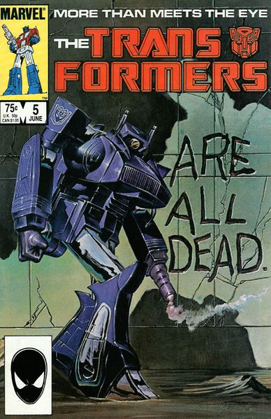
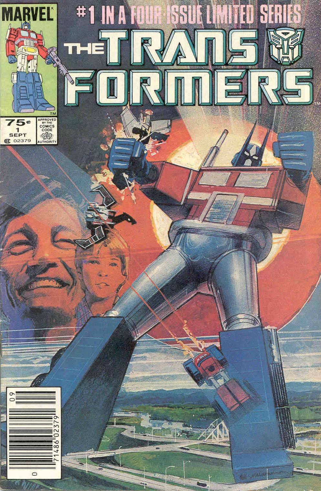

Comics
The first few comics were produced by Marvel Comics, and it is sometimes stated that the comic predates the cartoon, and although the first issue of the comic came out before the first episode of the cartoon, the cartoon itself went into production long before the comic.
The comic was initially set in the main Marvel Universe, but soon moved to a seperate Alternate Universe along with the G.I. Joe comic to prevent Executive Meddling from Hasbro interfering with Marvel's own character. It was originally written by Bob Budiansky: he and hos successor, Simon Furman, would end up having more influence on the overall Transformers mythos than anyone else. During this time, instead of simply telling the artists what to draw, the writers simply gave them a plot outline and let them draw a strip. Budiansky and Furman then took the strip and added Speech Bubble; this arrangmement meant that the artists had much more influence on the story than what is common nowadays.
In America, the comic was first published as a bimonthly miniseries, before being developing into an ongoing monthly title. It was printed on higher-quality paper than most other comics, and as a result was also more expensive. While it used the same characters, setting, and premise as the cartoon, it told a significantly different set of stories. In particular, while the Transformers in the cartoon were built by Quintessons, in the comic, they were created by the god Primus, a part of canon later cartoon series adopted.
In the UK, the comic was published weekly for most of its run, and the American comics were commonly split in two in order to stretch the material. These were interspersed with original stories, mostly written by Simon Furman, which were where concepts like Primus which later migrated to the US title made their first appearance. These stories usually fit in with the American continuity, albeit with occasional twisting. After Budiansky suffered Creator Breakdown as a result of trying to keep Hasbro happy, Furman was brought on to write both the US and UK comics. His focus on story arcs and Character Development was considered the high point of the comic's run; however, due to a communications breakdown, the UK comics at this point drifted out of sync with the US publication. They also stopped doing full length original stories and began printing even less American material in each issue, splitting the original issues into three or four parts. To make up for the dramatically shortened length, the UK comic also featured a secondary, backup strip in black and white, written by Furman.
It finally ended after 80 issues (in America) or 332 (in Britain) due to declining interest in Transformers, though Marvel would later publish the short-lived Generation 2 comic. In 2012, IDW Publishing announced Transformers: Regeneration One, a relaunch of the Marvel Transformers continuity picking up 21 years after where issue 80 left off. This series ran for 22 issues (including #80.5, given away for Free Comic Book Day 2012, and issue #0, set between #94 and #95), concluding definitively with issue #100 in March 2014.
Notable Comic Covers
 Notable Comic Series
- War Within